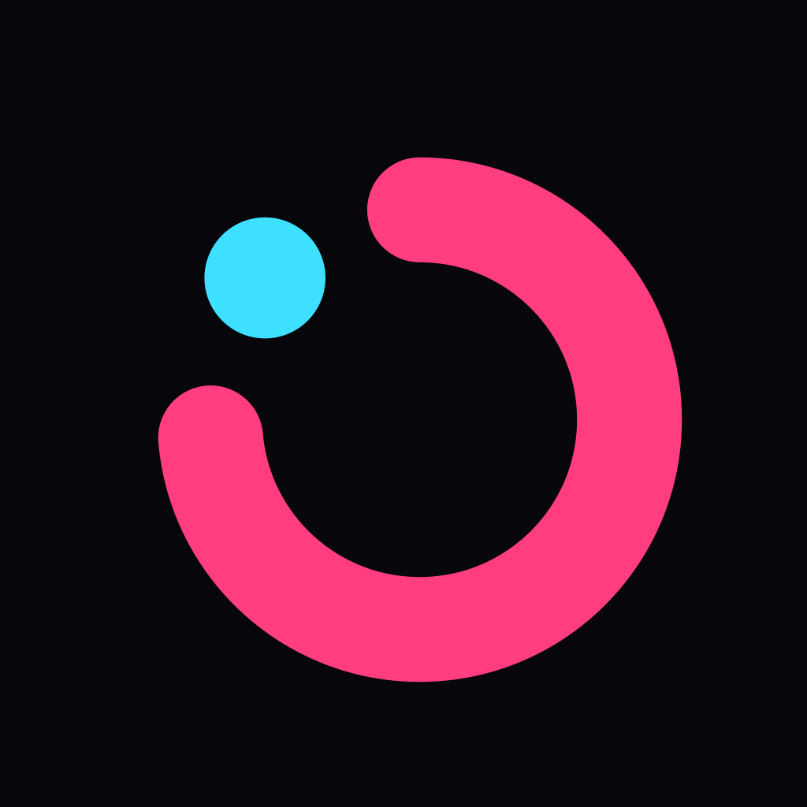

Privacy Policy
Effective October 18, 2026
Tickstep does not collect, store on servers, share or sell any personal data. The app has no account, no analytics, no advertising and no tracking.
What stays on your iPhone
Your workouts, your workout history and your settings are kept only on your device, in the app's own storage. They never leave it, unless your iPhone's own backup (iCloud or a computer) includes the app's data — that backup is governed by Apple's terms, not by Tickstep.
Notifications and Live Activities
Phase-change notifications and the Lock Screen Live Activity are created on your device by the app. Nothing is sent to a server.
Children
Tickstep collects no data from anyone, including children.
Changes
If this policy ever changes, the new version will be published on this page with a new date.
Contact
Действует с 18 октября 2026 г.
Tickstep не собирает, не хранит на серверах, не передаёт и не продаёт персональные данные. В приложении нет аккаунта, аналитики, рекламы и отслеживания.
Что остаётся на вашем iPhone
Ваши тренировки, история и настройки хранятся только на устройстве, в хранилище приложения. Они никуда не передаются — кроме резервной копии самого iPhone (iCloud или компьютер), если она включает данные приложений; на неё распространяются условия Apple, а не Tickstep.
Уведомления и Live Activity
Уведомления о смене фазы и Live Activity на экране блокировки создаёт само приложение на устройстве. На серверы ничего не отправляется.
Дети
Tickstep не собирает данные ни о ком, в том числе о детях.
Изменения
Если политика изменится, новая версия будет опубликована на этой странице с новой датой.